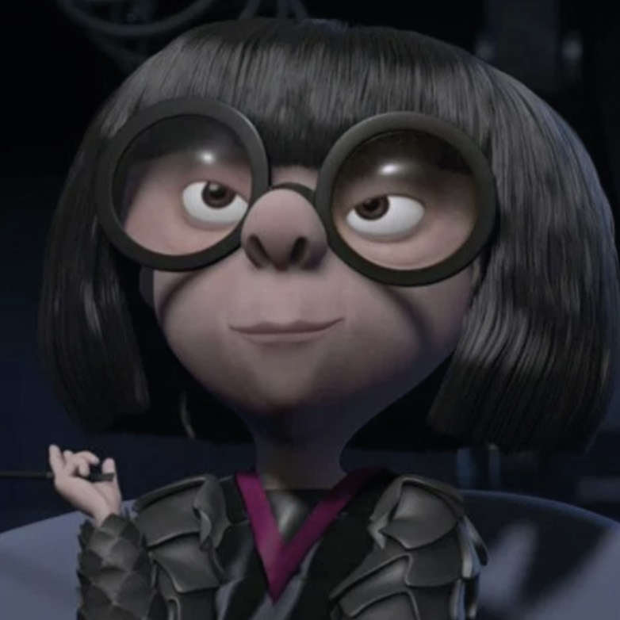
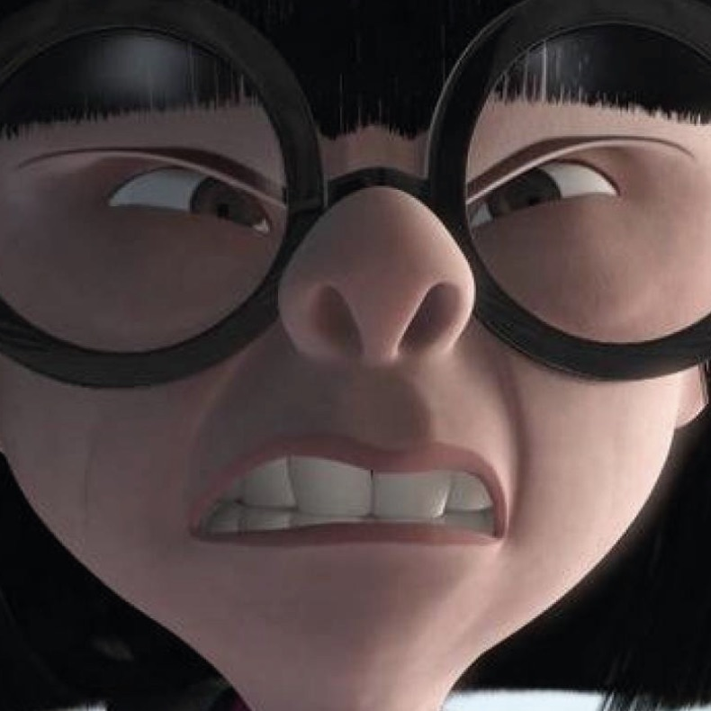
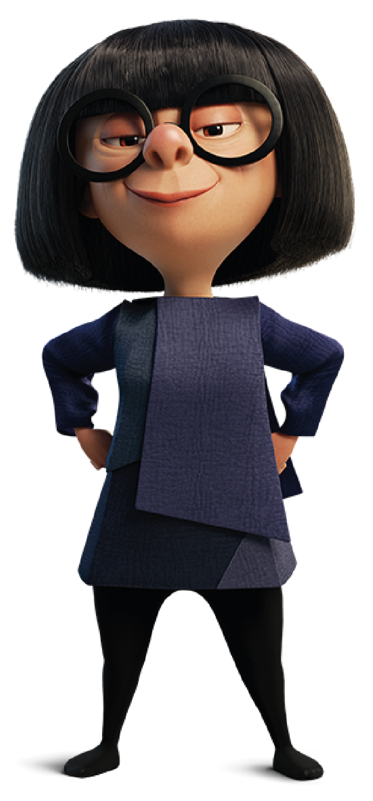

RELEVAMIENTO DE EDNA MODA
Aparición en la Película
En la película hace de la vestuarista de la familia Parr. Su profesión es diseñadora de modas. Fue vista al principio de la película en la boda de Bob Parr y Helen Parr junto a los amigos de ellos. Unos años después, se reencuentra con Bob Parr para la recompostura de un traje. En vez de recomponer el traje decide hacerle uno mejor y más resistente. Luego de ese trabajo la contratan para que haga trajes para toda la familia Parr.
La escena en la que aparece:
Su mejor escena:
Su Personalidad
Muestra tener un carácter muy fuerte, siempre contesta todo lo que se le pide, es muy sabia y va de frente. Más allá de su pequeña estatura se muestra gruñona. Le gusta la moda y no solo la ejerce, sino que también la aplica a su estilo. Se siente infinitamente superior a todos los demás diseñadores de moda del mundo, aunque no en un sentido egocéntrico, y muestra una indiferencia hacia las boutiques de pasarelas y modelos de moda modernos, alegando que ella recién había regresado de un evento de moda de diseñar los trajes para ellos, y los llamó "mimadas con labios”.
 Su Apariencia
Mide 1,48m y es de nacionalidad euroasiática. La vestimenta contiene un vestido negro de mangas largas con un cuello fucsia. Lo combina con medias enteras negras y unos mocasines. Utiliza junto a su vestuario unos anteojos muy grandes y redondos de marco negro. En algunas ocasiones de la película aparece vestida con un Kimono o un traje más formal. Algunos creen que el personaje de Edna Moda está basado en la diseñadora de moda de la vida real Edith Head. También, su cabello, personalidad, y aspecto europeo pueden aludir a la famosa diseñadora de ropa y fotógrafa Anna Wintour. Además de compartir un parecido con Hunt..
